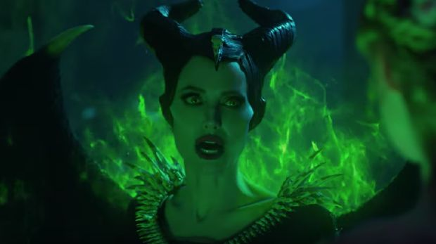

Review
Maleficent 2 : Mistress of Evil
Temukan cerita yang makin menegangkan dan kompleks, simak review film maleficent 2.
Yuyun Nurlita : Selasa, 13 September 2022
Maleficent 2 tayang pada 16 Oktober 2019. film yang dibintangi oleh Anggelina Jolie ini kembali menggempar
para penggemar film Disney. setelah Maleficent 1 yang mengisahkan tentang jalinan cinta yang tragis dari
seorang peri penunggu hutan (Anggelina Jolie), kini sekuel keduanya lebih memfokuskan kebimbangan
Putri Aurora.
Awal cerita dimulai ketika Putri Aurora merasa bahagia karena dilaar kekasihnya, yaitu Pangeran Philip.
Berencana untukk menikah, Putri Aurora dan Ibu angkatnya (Maleficent) diundang ke istana kerajaan Panggeran Philip
untuk makan malam bersama keluarga besar.
selama ini di luar Bangsa Moor (bangsa peri), banyak rumor yang menyebutkan jika Maleficent adalah pei yang jahat.
Bahkan kutukanya terhadap Putri Aurora beberapa tahun silam dianggap kejahatan tak termaafkan.
Namun, faktanya Maleficent begitu mencintai putri angkatnya, demi membahagiakan Aurora, Maleficent sampai rela melakukan
sejumlah persiapan khusus untuk bertemu keluarga Pangeran philip.
Singkat cerita, Aurora dan Maleficent disabut dengan baik oleh kedua orangtua Pangeran Philip yaitu Raja
John dan Ratu Ingrith. Namun, di tengah Perbincangan saat makan malam, Ratu Ingrith justru sering menyinggung Maleficent dan
itu memancing amarah Maleficent. Sebagai calon mertua, Rati Ingrith ingin Puti Aurora tinggal di kerajaan, dan tentu saja
Maleficent tidak rela berjauhan dengan putrinya. Tanpa sadar Maleficent mengeluarkan kekuatannya dan merusak apapun yang ada di
sekitarnya.

Gambar
https://www.cnnindonesia.com/hiburan/20191016092047-220-439926/sinopsis-maleficent-mistress-of-evil-amukan-sang-ibu-asuh
Malam itu konflik antara Putri Aurora dan Maleficent semakin memanas. Aurora yang juga menuduh ibunya menjadi penyebab
kutukan sang calon ayah mertua, dan akhirnya puri aurora memilih tinggal di kerajaan pangeran philip. setelah kejadian itu
Maleficent langsung terbang sejauh mungkin. Namun tiba-tiba saja Maleficent ditembak oleh orang suruhan ratu ingrith.
Beruntungnya kali ini nyawa maleficent berhasil diselaatkan oleh segerombolan peri yang mengaku sebagai dark fey. mereka adalah
sejenis peri yang sama dengan maleficent. tetapi selama ini mereka bersembunyi untuk menghindari kejahatan manusia.
Rasa sakit Maleficent semakin memuncak, bahkan ia tidak lagi mengakui putri aurora sebagai putrinya. Di babak ini,
Maleficent dan dark fey yang saat itu dipimpin oleh Conall dan Borra berencana ingin melakukan perang terhadap manusia. salah
satu incaran terkuat adalah kerajaan Ulstead yaitu kerajaan keluarga Pangeran Philip.
tapi, tanpa disadari Ratu Ingrith ternyata juga telah berencana melawan bangsa peri. sebagai ratu kerajaan ia berharap dapat menguasai
seluruh wilayah Bangsa Moor dan juga membunuh semua peri yang telah dijaga oleh calon menantunya.
Setidaknya begitulah konflik yang tergabarkan dalam fil Maleficent 2, sosok Anggelina Jolie yang berperan sebagai Maleficent memiliki
pengaruh kuat dalam kesuksesan film ini. Walaupun ia menampilkan sisi jahat, namun pada akhirnya kebaikan dan kecantikan
hati Maleficent tetap mencuri hati penonton.